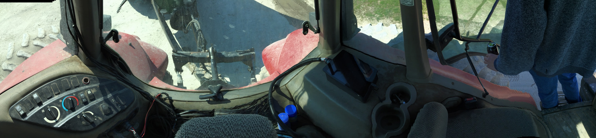
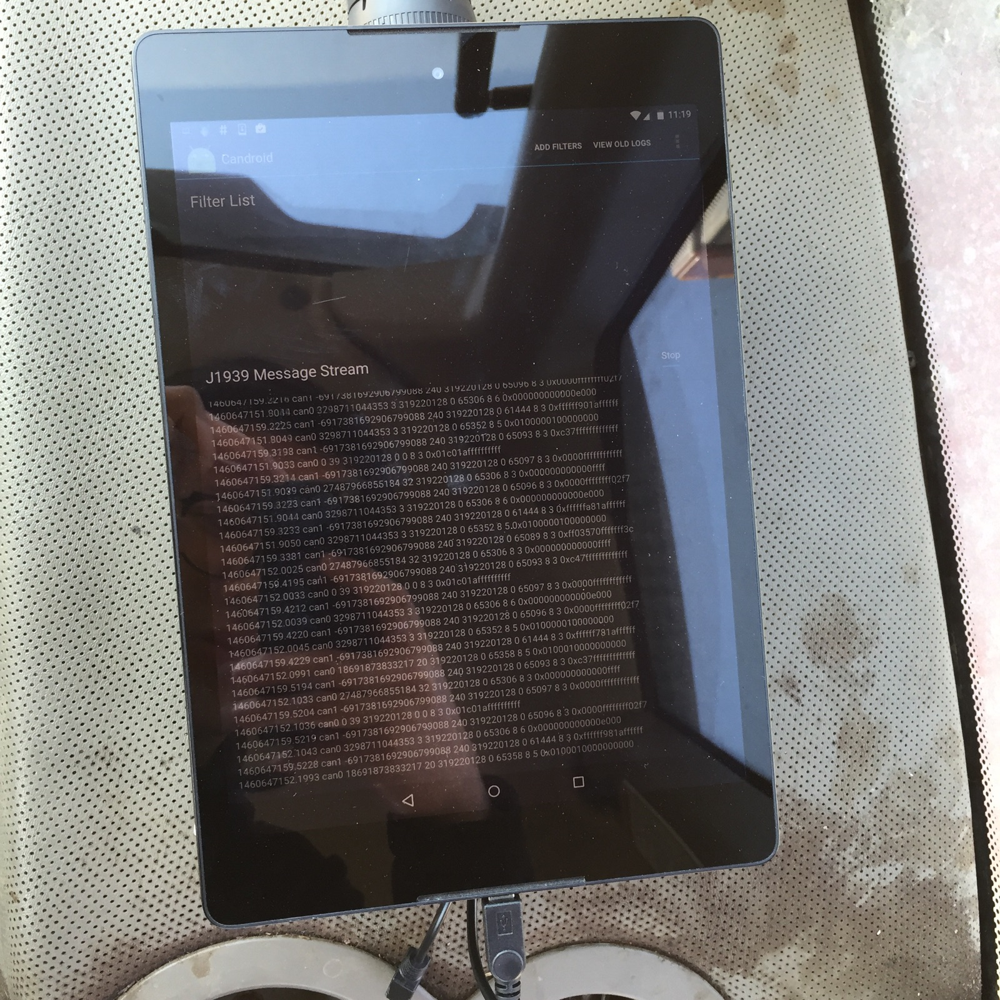

CANdroid During a Manure Spreading Session
We utilized CANdroid to collect ISOBUS data during a manure spreading session. The session lasted for about 2 hours with a total of 6 passes of manure spreading in the field.
CANdroid sitting in the back of the tractor: 
CANdroid collecting ISOBUS data while the tractor is running: 